Historical observations
Each timeframe uses its own original candle sequence. Raw broker-clock labels are preserved. Longer intervals may reflect sessions, clock changes or missing observations. BUY and SELL counts refer to strategy decisions at candle close.
M15
| Reported measure | Value |
|---|---|
| Source candles | 10000 |
| First raw label | 1781128800 |
| Last raw label | 1794930300 |
| Nominal pairs | 9885 |
| Shorter positive pairs | 0 |
| Longer raw-label pairs | 114 |
| Unexpected field-count rows | 0 |
| Nonpositive OHLC rows | 0 |
| Out-of-bounds OHLC rows | 0 |
| Rows with insufficient finite OHLC prices | 0 |
| Replay opens | 10000 |
| Replay closes | 10000 |
| Final replay close has a successor open | No |
| BUY | 53 |
| HOLD | 9868 |
| SELL | 79 |
Gap distribution and signal reasons
| Seconds | Pairs |
|---|---|
| 900 | 9885 |
| 4500 | 4 |
| 8100 | 86 |
| 13500 | 1 |
| 177300 | 1 |
| 180900 | 20 |
| 190800 | 2 |
| Reason | Occurrences |
|---|---|
| BUY_SETUP | 53 |
| GAP_CROSSOVER | 6 |
| MACD_FILTER | 59 |
| NO_CROSSOVER | 9382 |
| RSI_FILTER | 5 |
| SELL_SETUP | 79 |
| TREND_FILTER | 237 |
| WARMUP | 199 |
Historical indicator exports
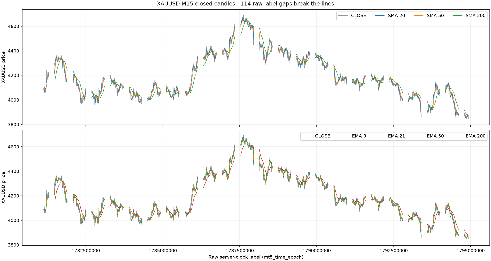
| Column | Finite rows | Warmup rows |
|---|---|---|
| close | 10000 | 0 |
| sma_20 | 9981 | 19 |
| sma_50 | 9951 | 49 |
| sma_200 | 9801 | 199 |
| ema_9 | 9992 | 8 |
| ema_21 | 9980 | 20 |
| ema_50 | 9951 | 49 |
| ema_200 | 9801 | 199 |
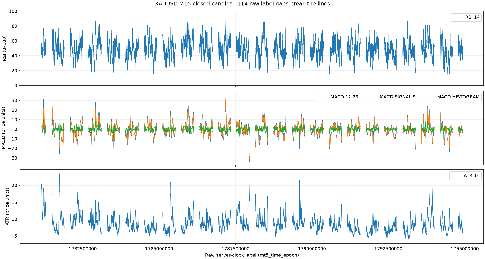
| Column | Finite rows | Warmup rows |
|---|---|---|
| close | 10000 | 0 |
| sma_20 | 9981 | 19 |
| sma_50 | 9951 | 49 |
| sma_200 | 9801 | 199 |
| ema_9 | 9992 | 8 |
| ema_21 | 9980 | 20 |
| ema_50 | 9951 | 49 |
| ema_200 | 9801 | 199 |
| rsi_14 | 9986 | 14 |
| macd_12_26 | 9975 | 25 |
| macd_signal_9 | 9967 | 33 |
| macd_histogram | 9967 | 33 |
| atr_14 | 9987 | 13 |
H1
| Reported measure | Value |
|---|---|
| Source candles | 10000 |
| First raw label | 1740704400 |
| Last raw label | 1794927600 |
| Nominal pairs | 9553 |
| Shorter positive pairs | 0 |
| Longer raw-label pairs | 446 |
| Unexpected field-count rows | 0 |
| Nonpositive OHLC rows | 0 |
| Out-of-bounds OHLC rows | 0 |
| Rows with insufficient finite OHLC prices | 0 |
| Replay opens | 10000 |
| Replay closes | 10000 |
| Final replay close has a successor open | No |
| BUY | 66 |
| HOLD | 9873 |
| SELL | 61 |
Gap distribution and signal reasons
| Seconds | Pairs |
|---|---|
| 3600 | 9553 |
| 7200 | 218 |
| 10800 | 126 |
| 14400 | 7 |
| 21600 | 2 |
| 32400 | 1 |
| 93600 | 1 |
| 104400 | 1 |
| 176400 | 2 |
| 180000 | 50 |
| 183600 | 32 |
| 187200 | 1 |
| 190800 | 2 |
| 194400 | 1 |
| 266400 | 1 |
| 270000 | 1 |
| Reason | Occurrences |
|---|---|
| BUY_SETUP | 66 |
| GAP_CROSSOVER | 22 |
| MACD_FILTER | 78 |
| NO_CROSSOVER | 9362 |
| RSI_FILTER | 10 |
| SELL_SETUP | 61 |
| TREND_FILTER | 245 |
| WARMUP | 199 |
Historical indicator exports
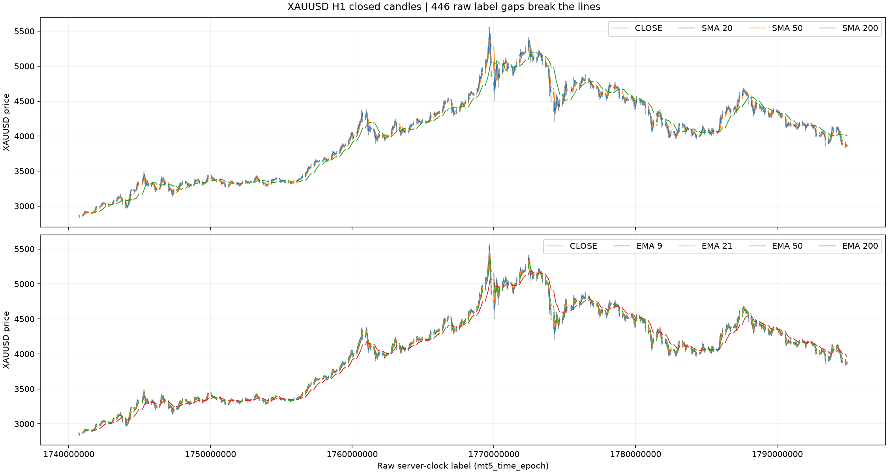
| Column | Finite rows | Warmup rows |
|---|---|---|
| close | 10000 | 0 |
| sma_20 | 9981 | 19 |
| sma_50 | 9951 | 49 |
| sma_200 | 9801 | 199 |
| ema_9 | 9992 | 8 |
| ema_21 | 9980 | 20 |
| ema_50 | 9951 | 49 |
| ema_200 | 9801 | 199 |
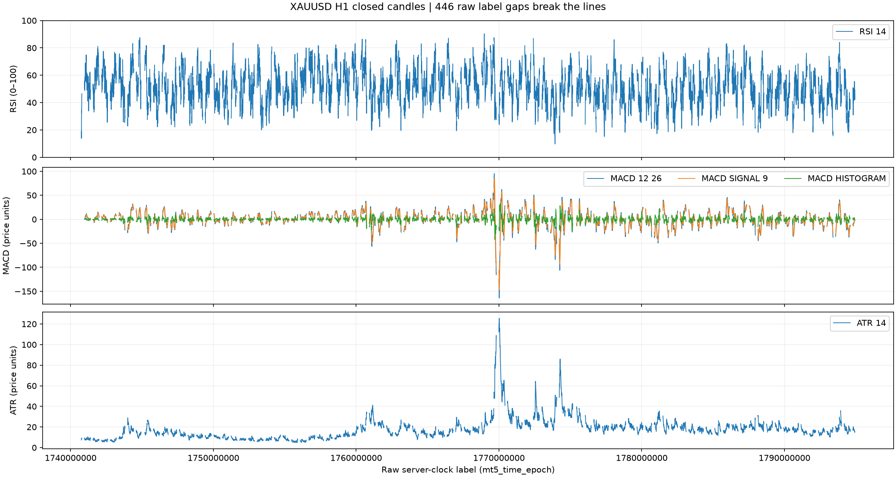
| Column | Finite rows | Warmup rows |
|---|---|---|
| close | 10000 | 0 |
| sma_20 | 9981 | 19 |
| sma_50 | 9951 | 49 |
| sma_200 | 9801 | 199 |
| ema_9 | 9992 | 8 |
| ema_21 | 9980 | 20 |
| ema_50 | 9951 | 49 |
| ema_200 | 9801 | 199 |
| rsi_14 | 9986 | 14 |
| macd_12_26 | 9975 | 25 |
| macd_signal_9 | 9967 | 33 |
| macd_histogram | 9967 | 33 |
| atr_14 | 9987 | 13 |
Retrospective partition validation
All six partitions, including each partition named test, contain previously inspected data. Genuine unseen holdout collection and partition execution results are unavailable.
| Partition | Source rows | Raw labels | Rows | Preceding warmup rows |
|---|---|---|---|---|
| M15 development | 1–6,000 | 1781128800–1789469100 | 6000 | 0 |
| M15 validation | 6,001–8,000 | 1789470000–1792125900 | 2000 | 6000 |
| M15 test | 8,001–10,000 | 1792126800–1794930300 | 2000 | 8000 |
| H1 development | 1–6,000 | 1740704400–1772794800 | 6000 | 0 |
| H1 validation | 6,001–8,000 | 1772798400–1783976400 | 2000 | 6000 |
| H1 test | 8,001–10,000 | 1783980000–1794927600 | 2000 | 8000 |
Hypothetical synthetic results
The fixed trades isolate cost changes at the same volume and reference prices. The dynamic comparison uses eight hand-authored M15 candles and injected signals. Its trade sizes, triggers and risk gates can change with the cost scenario.
| Scenario | Spread per oz | Slippage per oz per modeled leg | Round-trip commission per lot | Fixed net P/L | Dynamic realized net P/L | Dynamic marked equity | Dynamic max drawdown |
|---|---|---|---|---|---|---|---|
| Ideal | 0 | 0 | 0 | 60.00 | 60.00 | 3,065.00 | 0.00 |
| Low | 0.15 | 0.05 | 3 | 54.40 | -76.96 | 2,925.44 | 103.12 |
| Baseline | 0.30 | 0.10 | 7 | 48.60 | -67.52 | 2,933.28 | 95.76 |
| Stress | 1.00 | 0.50 | 15 | 17.00 | -65.75 | 2,934.25 | 73.25 |
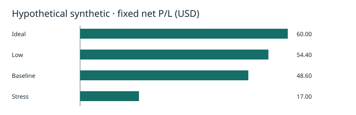
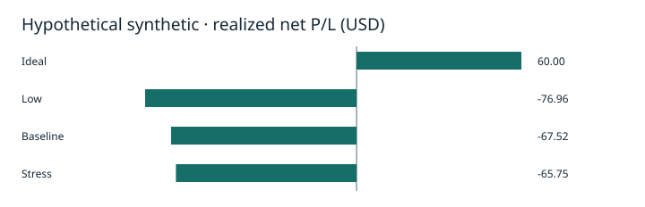
| Scenario | Final balance (USD) | Unrealized P/L (USD) | Realized return | Marked return | Entries | Closed | Rejected | Unresolved position | Paid commission (USD) | Pending commission (USD) |
|---|---|---|---|---|---|---|---|---|---|---|
| Ideal | 3,060.00 | 5.00 | 2.000% | 2.167% | 3 | 2 | 4 | Open BUY from row 8 | 0.00 | 0.00 |
| Low | 2,923.04 | 2.40 | -2.565% | -2.485% | 3 | 2 | 4 | Open BUY from row 8 | 0.51 | 0.24 |
| Baseline | 2,932.48 | 0.80 | -2.251% | -2.224% | 3 | 2 | 4 | Open BUY from row 8 | 1.12 | 0.56 |
| Stress | 2,934.25 | -0.00 | -2.192% | -2.192% | 2 | 1 | 5 | Open SELL from row 6 | 0.75 | 0.75 |
Marked equity includes the unrealized liquidation-side mark. The full pending commission is due at exit. Unresolved positions remain open at the terminal event. The dynamic ledger records modeled fill prices with combined execution costs, so separate spread and slippage attribution is unavailable. Unavailable time-based metrics and their reasons are recorded in the JSON summary.
Ideal synthetic event series
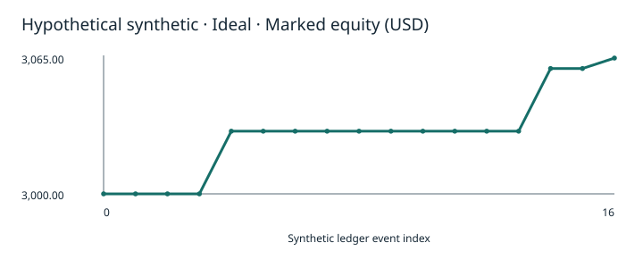
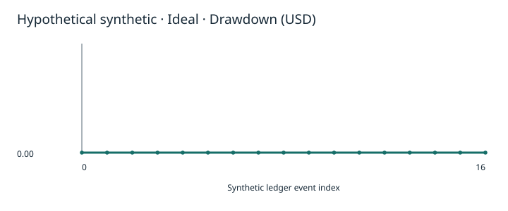
Low synthetic event series
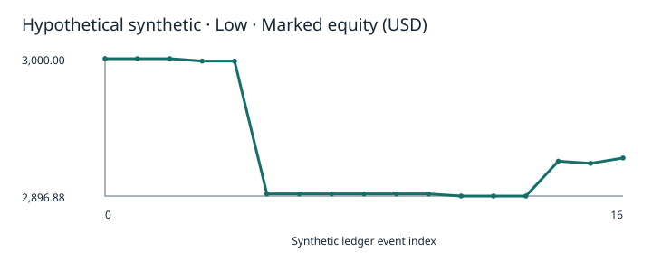
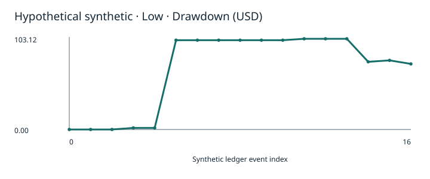
Baseline synthetic event series
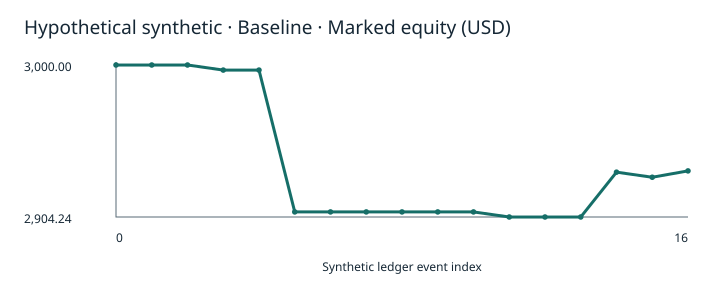
Stress synthetic event series
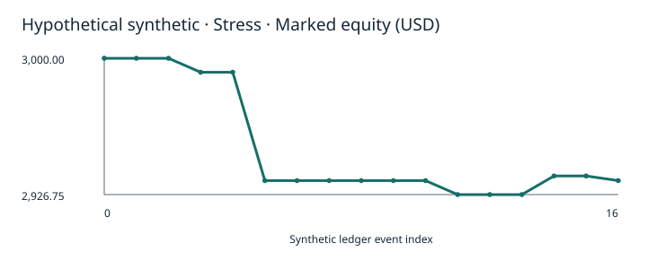
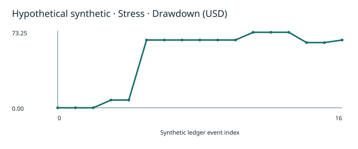
Readiness blockers
Historical execution and profitability are unavailable. Genuine out-of-sample validation and automated demo readiness are blocked.
- Verify broker server time, UTC offset and DST behavior.
- Verify effective broker risk-day reset boundaries.
- Verify historical executable bid/ask, quote basis and other execution inputs.
- Resolve the demo broker tick-value discrepancy.
- Inventory prior intervals and precommit before collecting genuinely unseen, verified nonoverlapping candles.
The saved demo diagnostic recorded USD 0.1 loss tick value per lot against a USD 1.000 formula value. Its status was REJECTED.
Resolve these blockers in a dedicated phase before Phase 7.
Evidence provenance
SHA-256 is computed from the exact input bytes. The report validates the schemas and reconciles shared counts, labels and source commitments.
Input files and SHA-256
- data/XAUUSD_H1.csv
a0ec85476a9cf5b5186c69dfed2d65bb6ccd100e5a05044bf1c041d94ad32541 - data/XAUUSD_M15.csv
a8611beccee72e10e8774a299b2fd1752521d04c755543d87f187d36b9ab986e - reports/XAUUSD_H1_validation.md
5df5c8d56684f422efc1f206fb29329b4781c2ed26295ab7abb1e0cbc7a28ae5 - reports/XAUUSD_M15_validation.md
327d51cdb7f2ef3f6ba73d1e6c5d2e2a854a9fbbc615644e1b3041a569c4be2f - reports/indicators/XAUUSD_H1_indicators.csv
4a00032c279657bcc436c6cb643477cea06659b69bee616921c859778813eb16 - reports/indicators/XAUUSD_H1_indicators.png
0e88394fc20a8eb4ae7a3f7022cfbfe67a2750c83dee758c0cc8129158f53646 - reports/indicators/XAUUSD_M15_indicators.csv
1d68b00042ea6c50c5dabf4fc058ff1a7983c7702522712eed17d695d81da9d7 - reports/indicators/XAUUSD_M15_indicators.png
4a8944220ee0738576d208de73ca58ef5405a4db926c866a77ecdaf81d6dff7e - reports/indicators_phase_3_3/XAUUSD_H1_indicators_phase_3_3.csv
ec408977a23878b9877843bec26fc08af208f93357ae19beaed4c969e4e27683 - reports/indicators_phase_3_3/XAUUSD_H1_indicators_phase_3_3.png
48e75b0b7a327dbb2bbb32b2f24e2fb2fec756c0a7b1fa35ab0aa8ee3c6d3fb3 - reports/indicators_phase_3_3/XAUUSD_M15_indicators_phase_3_3.csv
7229889388e90375aa3aaf30d85d20e4aaf9556282d423d8943be49216208fa5 - reports/indicators_phase_3_3/XAUUSD_M15_indicators_phase_3_3.png
027d079b54134f7f54230ffb8c16a74963c4e276ff85192342c8db99bd295f06 - reports/phase_5_2_broker_diagnostic.json
47784f7dce545957f8976c9bcd902b39299aba21de9e5086a42f641bfc835794 - reports/replay_phase_6_1/XAUUSD_H1_replay_audit.json
8e256dce67a23f030ac9b53f22612b438c1781f019eb8226cc9e29e97e1b5a90 - reports/replay_phase_6_1/XAUUSD_M15_replay_audit.json
a24d0cf417eace0b1627062914e24877b824aaf02155fb48e32c385fc55778da - reports/sensitivity_phase_6_5/sensitivity.json
670a0cfd2dec6408e389fd46433499a5defa5fd273a531fc0e6abe760a23c88b - reports/signals_phase_4_1/XAUUSD_H1_signals_phase_4_1.csv
ea1945f93f011f9bcc41bb44b31886a43fc1c62ee6c07961c9aa319aa78dae00 - reports/signals_phase_4_1/XAUUSD_H1_signals_phase_4_1_counts.json
5d14fc9567ac73367418aad0b452da436d20db37ad5995663d515a18a2723119 - reports/signals_phase_4_1/XAUUSD_M15_signals_phase_4_1.csv
2ba1bc3ee869476d31f89415ec150bdc80f8063198764eb082355efa68313a9a - reports/signals_phase_4_1/XAUUSD_M15_signals_phase_4_1_counts.json
70070119bb7e53241c11b04e5c8492cfdd126db46f4b829885a691c3ab47e7c7 - reports/validation_phase_6_6/validation.json
ada9c5d23978a2e97a0754ab37397318b786b086a9478553ecbf39432170a123